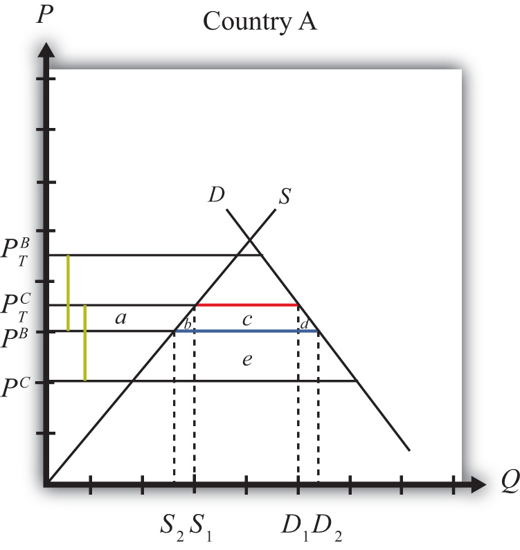
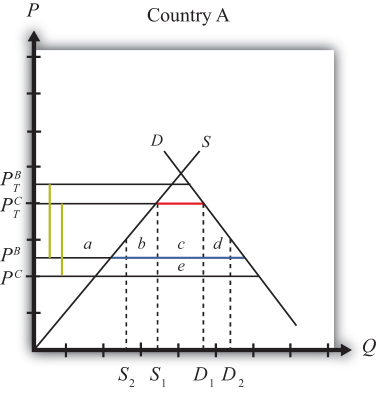
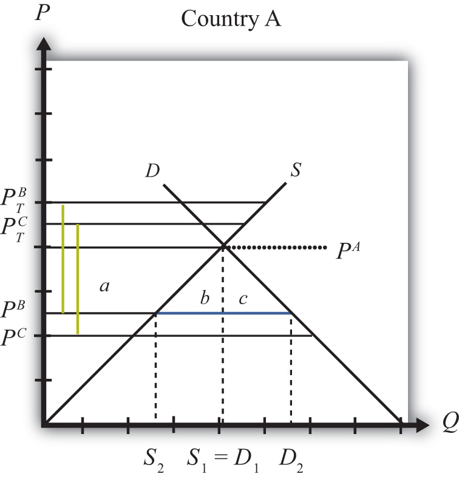

For a variety of reasons, it often makes sense for nations to coordinate their economic policies. Coordination can generate benefits that are not possible otherwise. A clear example of this is shown in the discussion of trade wars among large countries in Chapter 7 "Trade Policy Effects with Perfectly Competitive Markets", Section 7.9 "Retaliation and Trade Wars". There it is shown that if countries cooperate and set zero tariffs against each other, then both countries are likely to benefit relative to the case when both countries attempt to secure short-term advantages by setting optimal tariffs. This is just one advantage of cooperation. Benefits may also accrue to countries that liberalize labor and capital movements across borders, that coordinate fiscal policies and resource allocation toward agriculture and other sectors, and that coordinate their monetary policies.
Any type of arrangement in which countries agree to coordinate their trade, fiscal, or monetary policies is referred to as economic integrationAny type of arrangement in which countries agree to coordinate their trade, fiscal, or monetary policies.. There are many different degrees of integration.
A preferential trade agreement (PTA) is perhaps the weakest form of economic integration. In a PTA, countries would offer tariff reductions, though perhaps not eliminations, to a set of partner countries in some product categories. Higher tariffs, perhaps nondiscriminatory tariffs, would remain in all other product categories. This type of trade agreement is not allowed among World Trade Organization (WTO) members, who are obligated to grant most-favored nation (MFN) status to all other WTO members. Under the MFN rule, countries agree not to discriminate against other WTO member countries. Thus, if a country’s low tariff on bicycle imports, for example, is 5 percent, then it must charge 5 percent on imports from all other WTO members. Discrimination or preferential treatment for some countries is not allowed. The country is free to charge a higher tariff on imports from non-WTO members, however. In 1998, the United States proposed legislation to eliminate tariffs on imports from the nations in sub-Saharan Africa. This action represents a unilateral preferential trade agreement since tariffs would be reduced in one direction but not the other. (Note that a PTA is also used more generally to describe all types of economic integration since they all incorporate some degree of “preferred” treatment.)
A free trade area (FTA)A situation in which a group of countries agrees to eliminate tariffs among themselves but maintain their own external tariff on imports from the rest of the world. occurs when a group of countries agrees to eliminate tariffs among themselves but maintain their own external tariff on imports from the rest of the world. The North American Free Trade Agreement (NAFTA) is an example of an FTA. When NAFTA is fully implemented, tariffs of automobile imports between the United States and Mexico will be zero. However, Mexico may continue to set a different tariff than the United States on automobile imports from non-NAFTA countries. Because of the different external tariffs, FTAs generally develop elaborate “rules of origin.” These rules are designed to prevent goods from being imported into the FTA member country with the lowest tariff and then transshipped to the country with higher tariffs. Of the thousands of pages of text that make up NAFTA, most of them describe rules of origin.
A customs union occurs when a group of countries agrees to eliminate tariffs among themselves and set a common external tariff on imports from the rest of the world. The European Union (EU) represents such an arrangement. A customs union avoids the problem of developing complicated rules of origin but introduces the problem of policy coordination. With a customs union, all member countries must be able to agree on tariff rates across many different import industries.
A common market establishes free trade in goods and services, sets common external tariffs among members, and also allows for the free mobility of capital and labor across countries. The EU was established as a common market by the Treaty of Rome in 1957, although it took a long time for the transition to take place. Today, EU citizens have a common passport, can work in any EU member country, and can invest throughout the union without restriction.
An economic union typically will maintain free trade in goods and services, set common external tariffs among members, allow the free mobility of capital and labor, and also relegate some fiscal spending responsibilities to a supranational agency. The EU’s Common Agriculture Policy (CAP) is an example of a type of fiscal coordination indicative of an economic union.
A monetary union establishes a common currency among a group of countries. This involves the formation of a central monetary authority that will determine monetary policy for the entire group. The Maastricht treaty, signed by EU members in 1992, proposed the implementation of a single European currency (the Euro) by 1999.
Perhaps the best example of an economic and monetary union is the United States. Each U.S. state has its own government that sets policies and laws for its own residents. However, each state cedes control, to some extent, over foreign policy, agricultural policy, welfare policy, and monetary policy to the federal government. Goods, services, labor, and capital can all move freely, without restrictions among the U.S. states, and the nation sets a common external trade policy.
In the post–World War II period, many nations pursued the objective of trade liberalization. One device used to achieve this was the General Agreement on Tariffs and Trade (GATT) and its successor, the WTO. Although the GATT began with less than 50 member countries, the WTO now claims 153 members as of 2010. Since GATT and WTO agreements commit all member nations to reduce trade barriers simultaneously, the agreements are sometimes referred to as a multilateral approach to trade liberalization.
An alternative method used by many countries to achieve trade liberalization includes the formation of preferential trade arrangements, free trade areas, customs unions, and common markets. Since many of these agreements involve geographically contiguous countries, these methods are sometimes referred to as a regional approach to trade liberalization.
The key question of interest concerning the formation of preferential trade arrangements is whether these arrangements are a good thing. If so, under what conditions? If not, why not?
One reason supporters of free trade may support regional trade arrangements is because they are seen to represent movements toward free trade. Indeed, Section 24 of the original GATT allows signatory countries to form free trade agreements and customs unions despite the fact that preferential agreements violate the principle of nondiscrimination. When a free trade area or customs union is formed between two or more WTO member countries, they agree to lower their tariffs to zero between each other but will maintain their tariffs against other WTO countries. Thus the free trade area is a discriminatory policy. Presumably, the reason these agreements are tolerated within the WTO is because they represent significant commitments to free trade, which is another fundamental goal of the WTO.
However, there is also some concern among economists that regional trade agreements may make it more difficult, rather than easier, to achieve the ultimate objective of global free trade.
The fear is that although regional trade agreements will liberalize trade among their member countries, the arrangements may also increase incentives to raise protectionist trade barriers against countries outside the area. The logic here is that the larger the regional trade area relative to the size of the world market, the larger will be that region’s market power in trade. The more market power, the higher would be the region’s optimal tariffs and export taxes. Thus the regional approach to trade liberalization could lead to the formation of large “trade blocs” that trade freely among members but choke off trade with the rest of the world. For this reason, some economists have argued that the multilateral approach to trade liberalization, represented by the trade liberalization agreements in successive WTO rounds, is more likely to achieve global free trade than the regional or preferential approach.
Much has been written on this subject recently. Here we have merely scratched the surface.
In what follows, we present the economic argument regarding trade diversion and trade creation. These concepts are used to distinguish between the effects of free trade area or customs union formation that may be beneficial and those that are detrimental. As mentioned, preferential trade arrangements are often supported because they represent a movement in the direction of free trade. If free trade is economically the most efficient policy, it would seem to follow that any movement toward free trade should be beneficial in terms of economic efficiency. It turns out that this conclusion is wrong. Even if free trade is most efficient, it is not true that a step in that direction necessarily raises economic efficiency. Whether a preferential trade arrangement raises a country’s welfare and raises economic efficiency depends on the extent to which the arrangement causes trade diversion versus trade creation.
In this section, we present an analysis of trade diversion and trade creation. The analysis uses a partial equilibrium framework, which means that we consider the effects of preferential trade liberalization with respect to a representative industry. Later in the section we consider how the results from the representative industry cases can be extended to consider trade liberalization that covers all trade sectors.
We assume in each case that there are three countries in the world: Countries A, B, and C. Each country has supply and demand for a homogeneous good in the representative industry. Countries A and B will form a free trade area. (Note that trade diversion and creation can occur regardless of whether a preferential trade agreement, a free trade area, or a customs union is formed. For convenience, we’ll refer to the arrangement as a free trade area [FTA].) The attention in this analysis will be on Country A, one of the two FTA members. We’ll assume that Country A is a small country in international markets, which means that it takes international prices as given. Countries B and C are assumed to be large countries (or regions). Thus Country A can export or import as much of a product as desired with Countries B and C at whatever price prevails in those markets.
We assume that if Country A were trading freely with either B or C, it would wish to import the product in question. However, Country A initially is assumed not to be trading freely. Instead, the country will have an MFN-specific tariff (i.e., the same tariff against both countries) applied on imports from both Countries B and C.
In each case below, we will first describe an initial tariff-ridden equilibrium. Then, we will calculate the price and welfare effects that would occur in this market if Countries A and B form an FTA. When the FTA is formed, Country A maintains the same tariff against Country C, the non-FTA country.
In general, a trade diversionA situation in which a free trade area diverts trade away from a more-efficient supplier outside the FTA toward a less-efficient supplier within the FTA. means that a free trade area diverts trade away from a more-efficient supplier outside the FTA and toward a less-efficient supplier within the FTA. In some cases, trade diversion will reduce a country’s national welfare, but in some cases national welfare could improve despite the trade diversion. We present both cases below.
Figure 9.10 "Harmful Trade Diversion" depicts the case in which trade diversion is harmful to a country that joins an FTA. The graph shows the supply and demand curves for Country A. PB and PC represent the free trade supply prices of the good from Countries B and C, respectively. Note that Country C is assumed to be capable of supplying the product at a lower price than Country B. (Note that in order for this to be possible, Country B must have tariffs or other trade restrictions on imports from Country C, or else all of B’s market would be supplied by C.)
Figure 9.10 Harmful Trade Diversion
We assume that A has a specific tariff tB = tC = t∗ set on imports from both Countries B and C. The tariff raises the domestic supply prices to PTB and PTC, respectively. The size of the tariff is denoted by the green dotted lines in Figure 9.10 "Harmful Trade Diversion", which show that t∗ = PTB − PB = PTC − PC.
Since, with the tariff, the product is cheaper from Country C, Country A will import the product from Country C and will not trade initially with Country B. Imports are given by the red line, or by the distance D1 − S1. Initial tariff revenue is given by the area (c + e), the tariff rate multiplied by the quantity imported.
Next, assume Countries A and B form an FTA and A eliminates the tariff on imports from Country B. Now, tB = 0, but tC remains at t∗. The domestic prices on goods from Countries B and C are now PB and PTC, respectively. Since PB < PTC, Country A would import all the product from Country B after the FTA and would import nothing from Country C. At the lower domestic price, PB, imports would rise to D2 − S2, denoted by the blue line. Also, since the nondistorted (i.e., free trade) price in Country C is less than the price in Country B, trade is said to be diverted from a more-efficient supplier to a less-efficient supplier.
The welfare effects are summarized in Table 9.16 "Welfare Effects of Free Trade Area Formation: Trade Diversion Cases".
Table 9.16 Welfare Effects of Free Trade Area Formation: Trade Diversion Cases
| Country A | |
|---|---|
| Consumer Surplus | + (a + b + c + d) |
| Producer Surplus | − a |
| Govt. Revenue | − (c + e) |
| National Welfare | + (b + d) − e |
Free trade area effects on Country A’s consumers. Consumers of the product in the importing country benefit from the free trade area. The reduction in the domestic price of both the imported goods and the domestic substitutes raises consumer surplus in the market. Refer to Table 9.16 "Welfare Effects of Free Trade Area Formation: Trade Diversion Cases" and Figure 9.10 "Harmful Trade Diversion" to see how the magnitude of the change in consumer surplus is represented.
Free trade area effects on Country A’s producers. Producers in the importing country suffer losses as a result of the free trade area. The decrease in the price of their product on the domestic market reduces producer surplus in the industry. The price decrease also induces a decrease in the output of existing firms (and perhaps some firms will shut down), a decrease in employment, and a decrease in profit, payments, or both to fixed costs. Refer to Table 9.16 "Welfare Effects of Free Trade Area Formation: Trade Diversion Cases" and Figure 9.10 "Harmful Trade Diversion" to see how the magnitude of the change in producer surplus is represented.
Free trade area effects on Country A’s government. The government loses all the tariff revenue that had been collected on imports of the product. This reduces government revenue, which may in turn reduce government spending or transfers or raise government debt. Who loses depends on how the adjustment is made. Refer to Table 9.16 "Welfare Effects of Free Trade Area Formation: Trade Diversion Cases" and Figure 9.10 "Harmful Trade Diversion" to see how the magnitude of the tariff revenue is represented.
Free trade area effects on Country A’s national welfare. The aggregate welfare effect for the country is found by summing the gains and losses to consumers, producers, and the government. The net effect consists of three components: a positive production efficiency gain (b), a positive consumption efficiency gain (d), and a negative tariff revenue loss (e). Notice that not all the tariff revenue loss (c + e) is represented in the loss to the nation. That’s because some of the total losses (area c) are, in effect, transferred to consumers. Refer to Table 9.16 "Welfare Effects of Free Trade Area Formation: Trade Diversion Cases" and Figure 9.10 "Harmful Trade Diversion" to see how the magnitude of the change in national welfare is represented.
Because there are both positive and negative elements, the net national welfare effect can be either positive or negative. Figure 9.10 "Harmful Trade Diversion" depicts the case in which the FTA causes a reduction in national welfare. Visually, it seems obvious that area e is larger than the sum of a and b. Thus, under these conditions, the FTA with trade diversion would cause national welfare to fall.
If conditions were different, however, the national welfare change could be positive. Consider Figure 9.11 "Beneficial Trade Diversion". This diagram differs from Figure 9.10 "Harmful Trade Diversion" only in that the free trade supply price offered by Country B, PB, is lower and closer to Country C’s free trade supply price, PC. The description earlier concerning the pre- and post-FTA equilibria remains the same, and trade diversion still occurs. The welfare effects remain the same in direction but differ in magnitude. Notice that the consumer surplus gain is now larger because the drop in the domestic price is larger. Also notice that the net national welfare effect, (b + d − e), visually appears positive. This shows that in some cases, formation of an FTA that causes a trade diversion may have a positive net national welfare effect. Thus a trade diversion may be, but is not necessarily, welfare reducing.
Figure 9.11 Beneficial Trade Diversion
Generally speaking, the larger the difference between the nondistorted prices in the FTA partner country and in the rest of the world, the more likely it is that trade diversion will reduce national welfare.
In general, trade creationA situation in which a free trade area creates trade that would not have existed otherwise. means that a free trade area creates trade that would not have existed otherwise. As a result, supply occurs from a more-efficient producer of the product. In all cases, trade creation will raise a country’s national welfare.
Figure 9.12 "Trade Creation" depicts a case of trade creation. The graph shows the supply and demand curves for Country A. PB and PC represent the free trade supply prices of the good from Countries B and C, respectively. Note that Country C is assumed to be capable of supplying the product at a lower price than Country B. (Note that in order for this to be possible, Country B must have tariffs or other trade restrictions on imports from Country C, or else all of B’s market would be supplied by C.)
Figure 9.12 Trade Creation
We assume that A has a specific tariff, tB = tC = t∗, set on imports from both Countries B and C. The tariff raises the domestic supply prices to PTB and PTC, respectively. The size of the tariff is denoted by the green dotted lines in Figure 9.12 "Trade Creation", which show that t∗ = PTB − PB = PTC − PC.
Since, with the tariffs, the autarky price in Country A, labeled PA in Figure 9.12 "Trade Creation", is less than the tariff-ridden prices PTB and PTC, the product will not be imported. Instead, Country A will supply its own domestic demand at S1 = D1. In this case, the original tariffs are prohibitive.
Next, assume Countries A and B form an FTA and A eliminates the tariff on imports from Country B. Now tB = 0, but tC remains at t∗. The domestic prices on goods from Countries B and C are now PB and PTC, respectively. Since PB < PA, Country A would now import the product from Country B after the FTA. At the lower domestic price PB, imports would rise to the blue line distance, or D2 − S2. Since trade now occurs with the FTA and it did not occur before, trade is said to be created.
The welfare effects are summarized in Table 9.17 "Welfare Effects of Free Trade Area Formation: Trade Creation Case".
Table 9.17 Welfare Effects of Free Trade Area Formation: Trade Creation Case
| Country A | |
|---|---|
| Consumer Surplus | + (a + b + c) |
| Producer Surplus | − a |
| Govt. Revenue | 0 |
| National Welfare | + (b + c) |
Free trade area effects on Country A’s consumers. Consumers of the product in the importing country benefit from the free trade area. The reduction in the domestic price of both imported goods and the domestic substitutes raises consumer surplus in the market. Refer to Table 9.17 "Welfare Effects of Free Trade Area Formation: Trade Creation Case" and Figure 9.12 "Trade Creation" to see how the magnitude of the change in consumer surplus is represented.
Free trade area effects on Country A’s producers. Producers in the importing country suffer losses as a result of the free trade area. The decrease in the price of their product in the domestic market reduces producer surplus in the industry. The price decrease also induces a decrease in output of existing firms (and perhaps some firms will shut down), a decrease in employment, and a decrease in profit, payments, or both to fixed costs. Refer to Table 9.17 "Welfare Effects of Free Trade Area Formation: Trade Creation Case" and Figure 9.12 "Trade Creation" to see how the magnitude of the change in producer surplus is represented.
Free trade area effects on Country A’s government. Since initial tariffs were prohibitive and the product was not originally imported, there was no initial tariff revenue. Thus the FTA induces no loss of revenue.
Free trade area effects on Country A’s national welfare. The aggregate welfare effect for the country is found by summing the gains and losses to consumers and producers. The net effect consists of two positive components: a positive production efficiency gain (b) and a positive consumption efficiency gain (c). This means that if trade creation arises when an FTA is formed, it must result in net national welfare gains. Refer to Table 9.17 "Welfare Effects of Free Trade Area Formation: Trade Creation Case" and Figure 9.12 "Trade Creation" to see how the magnitude of the change in national welfare is represented.
The analysis above considers the welfare effects on participants in one particular market in one country that is entering into a free trade area. However, when a free trade area is formed, presumably many markets and multiple countries are affected, not just one. Thus, to analyze the aggregate effects of an FTA, one would need to sum up the effects across markets and across countries.
The simple way to do that is to imagine that a country entering an FTA may have some import markets in which trade creation would occur and other markets in which trade diversion would occur. The markets with trade creation would definitely generate national welfare gains, while the markets with trade diversion may generate national welfare losses. It is common for economists to make the following statement: “If the positive effects of trade creation are larger than the negative effects of trade diversion, then the FTA will improve national welfare.” A more succinct statement, though also somewhat less accurate, is that “if an FTA causes more trade creation than trade diversion, then the FTA is welfare improving.”
However, the converse statement is also possible—that is, “if an FTA causes more trade diversion than trade creation, then the FTA may be welfare reducing for a country.” This case is actually quite interesting since it suggests that a movement to free trade by a group of countries may actually reduce the national welfare of the countries involved. This means that a movement in the direction of a more-efficient free trade policy may not raise economic efficiency. Although this result may seem counterintuitive, it can easily be reconciled in terms of the theory of the second best.
One might ask, if free trade is economically the most efficient policy, how can it be that a movement to free trade by a group of countries can reduce economic efficiency? The answer is quite simple once we put the story of FTA formation into the context of the theory of the second best. Recall that the theory of the second best suggested that when there are distortions or imperfections in a market, then the addition of another distortion (like a trade policy) could actually raise welfare or economic efficiency. In the case of an FTA, the policy change is the removal of trade barriers rather than the addition of a new trade policy. However, the second-best theory works much the same in reverse.
Before a country enters an FTA, it has policy-imposed distortions already in place in the form of tariff barriers applied on imports of goods. This means that the initial equilibrium can be characterized as a second-best equilibrium. When the FTA is formed, some of these distortions are removed—that is, the tariffs applied to one’s FTA partners. However, other distortions remain—that is, tariffs applied against the nonmember countries. If the partial tariff removal substantially raises the negative effects caused by the remaining tariff barriers with the non-FTA countries, then the efficiency improvements caused by free trade within the FTA could be outweighed by the negative welfare effects caused by the remaining barriers outside the FTA, and national welfare could fall.
This is, in essence, what happens in the case of trade diversion. Trade diversion occurs when an FTA shifts imports from a more-efficient supplier to a less-efficient supplier, which by itself causes a reduction in national welfare. Although the economy also benefits through the elimination of the domestic distortions, if these benefits are smaller than the supplier efficiency loss, then national welfare falls. In general, the only way to assure that trade liberalization will lead to efficiency improvements is if a country removes its trade barriers against all countries.
Jeopardy Questions. As in the popular television game show, you are given an answer to a question and you must respond with the question. For example, if the answer is “a tax on imports,” then the correct question is “What is a tariff?”